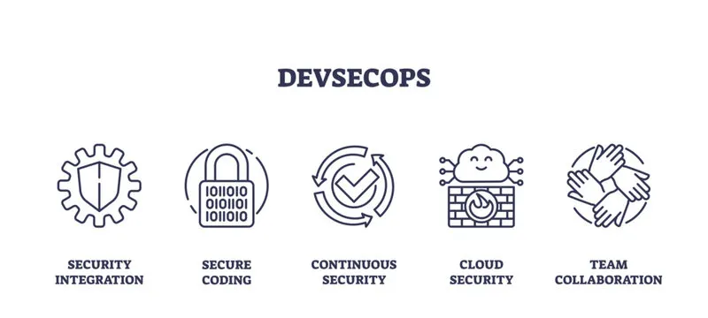

Tujuan Praktik
Tujuan dari praktik ini adalah memahami dasar penerapan Continuous Integration/Continuous Deployment (CI/CD) dengan menggunakan GitHub Actions. Melalui praktik ini, peserta diharapkan mampu:
- Membuat pipeline sederhana di GitHub.
- Menambahkan kode Python beserta unit test.
- Memodifikasi pipeline agar dapat menjalankan pengujian otomatis.
- Melihat hasil eksekusi pipeline dan memastikan statusnya sukses.
Langkah-langkah Praktik
Tujuan dari praktik ini adalah memahami dasar penerapan Continuous Integration/Continuous Deployment (CI/CD) dengan menggunakan GitHub Actions. Melalui praktik ini, peserta diharapkan mampu:
1. Buat Akun GitHub (https://github.com) → jika belum punya.
2. Install Git di laptop masing-masing:
- Windows: unduh di git-scm.com
- Linux/Mac: biasanya sudah terpasang, jika belum → sudo apt install git
3. Siapkan editor (disarankan VS Code).
4. Membuat Repository Baru
- Login ke GitHub → klik New Repository.
- Nama repo: devsecops-intro.
- Centang Initialize this repository with a README.
- Klik Create Repository.
5. Clone Repository ke Laptop
6. Menambahkan File Aplikasi Sederhana
• Buat file hello.py (atau index.html)
Contoh hello.py:
• Simpan, lalu jalankan lokal untuk tes:
• Tambahkan ke Git:
7. Membuat Workflow CI (GitHub Actions)
- Di repo, buat folder baru: .github/workflows/
- Tambahkan file ci.yml
- Isi file ci.yml:
8. Uji Pipeline
• Commit & push file ci.yml:
• Buka repo GitHub → tab Actions → lihat pipeline berjalan.
• Jika berhasil → log menunjukkan:
9. Tambahkan File Baru
• Buat file greeting.py berisi fungsi sederhana:
10. Tambahkan Unit Test
• Buat file test_greeting.py:
11. Modifikasi Workflow CI
• Ubah file .github/workflows/ci.yml agar menjalankan unit test dengan pytest:
12. Push ke Github
• Setelah di-push, pipeline harus menunjukkan hasil pytest berjalan
• Jika semua benar → status pipeline = sukses ( ).
Hasil Akhir
Kesimpulan
Pada praktik minggu pertama ini, berhasil dibuat pipeline sederhana menggunakan GitHub Actions untuk menjalankan CI/CD. Proses dimulai dengan membuat fungsi greeting() di Python, menambahkan unit test, lalu mengintegrasikannya ke dalam workflow. Beberapa error sempat muncul (karakter kutip yang salah, nama fungsi tidak konsisten, dan perbedaan spasi pada string output), namun dapat diperbaiki dengan menyesuaikan kode dan test agar sinkron.
Dari praktik ini, dapat dipelajari bahwa:
- CI/CD membantu memastikan kode yang di-push selalu diuji otomatis.
- Detail kecil seperti penulisan kutip atau spasi bisa menyebabkan pipeline gagal.
- Unit test sangat penting untuk menjaga konsistensi fungsi sesuai ekspektasi.
- GitHub Actions memudahkan developer untuk membangun alur otomatis mulai dari build hingga testing.